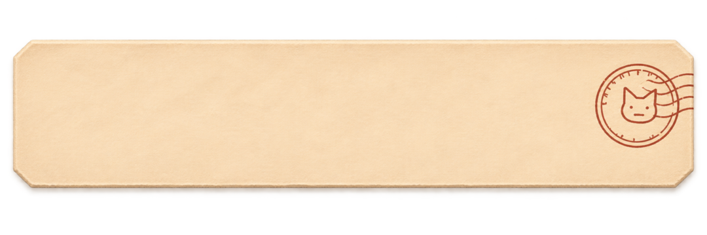
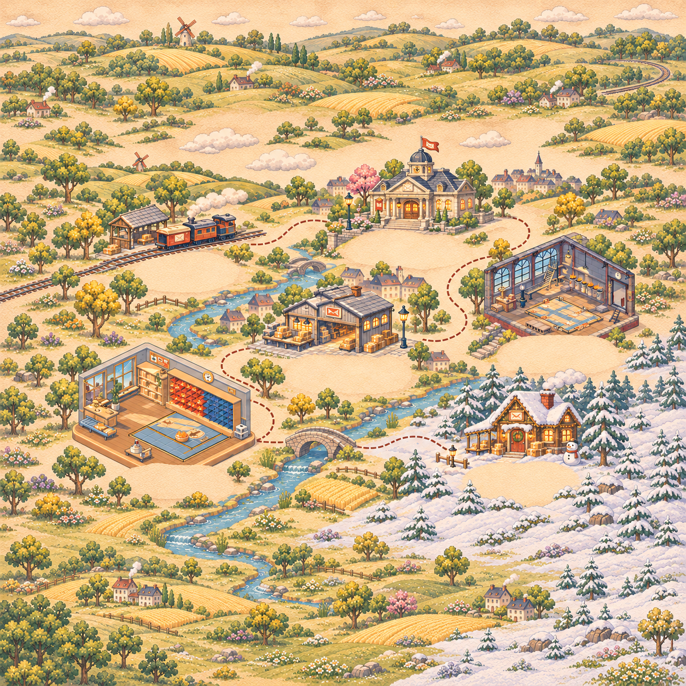
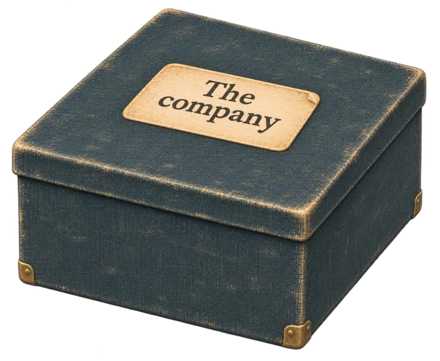
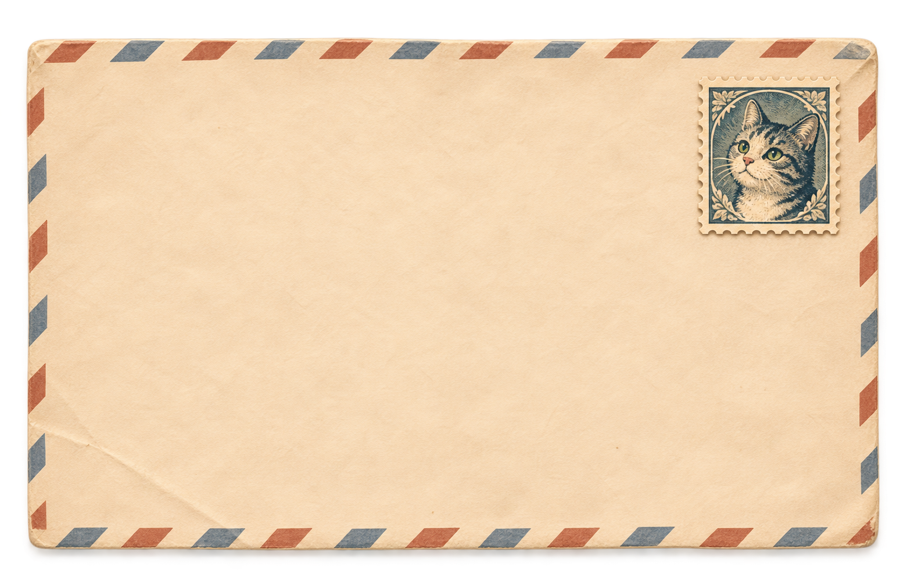

Map → place → chapter packet → letter → playable delivery.
This is a separate interface prototype with its own example journey and saved route. The office example begins with three deliveries posted; the depot example starts later in the journey. The first forty deliveries use the existing game’s rooms and rules; four later places show the planned journey.
The map has no enclosing paper edge. Its artwork and world coordinates can grow with new places; the direct index and chapter packets keep individual letters manageable.
Phone shows one focused object. iPad Mini-sized widths and larger screens put the map beside the open post. Starting a delivery gives the board the full screen. Pause stays a precision tool.
See the phone and two-pane views
Return to the earlier studies
Opening the letter…